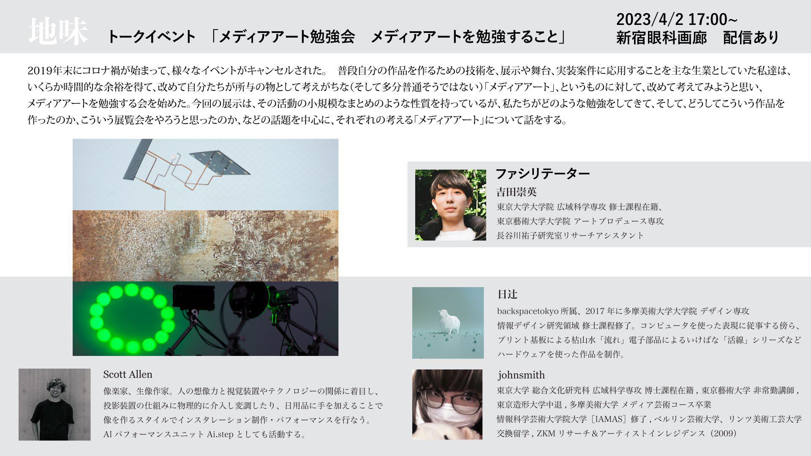
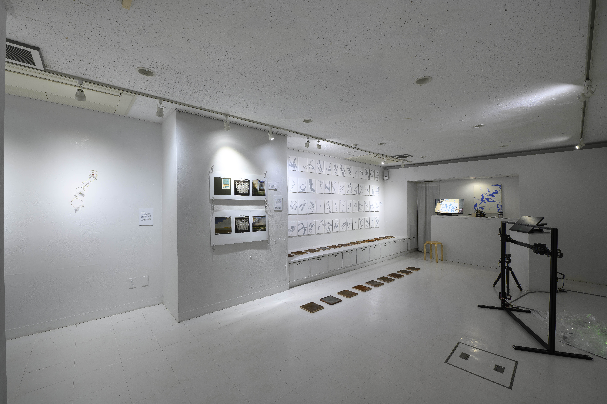
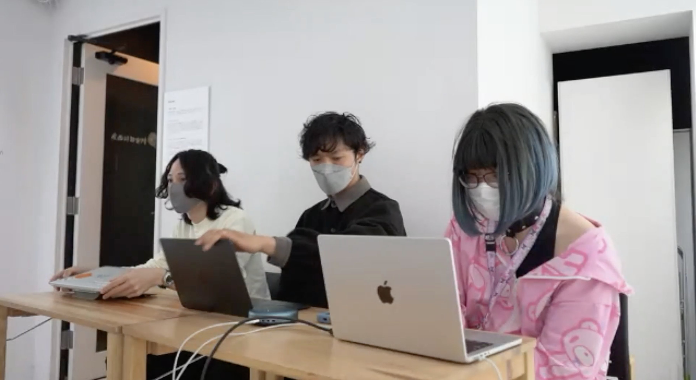
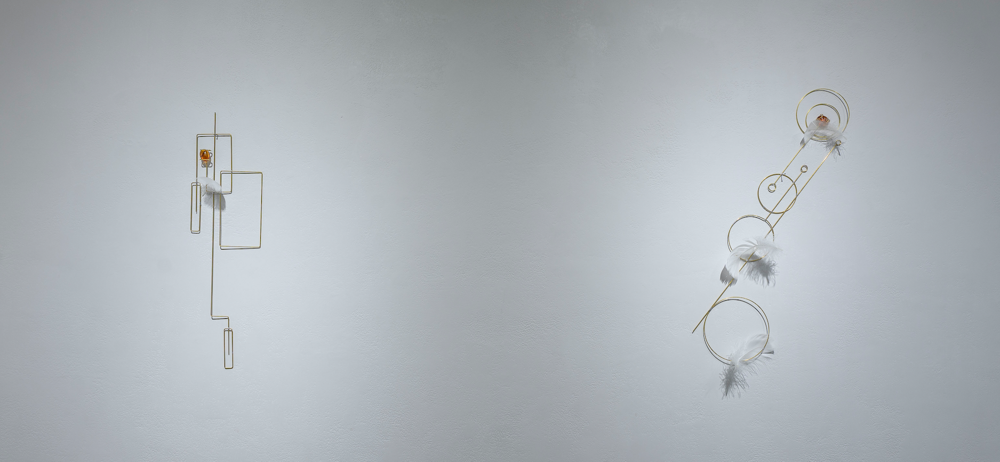
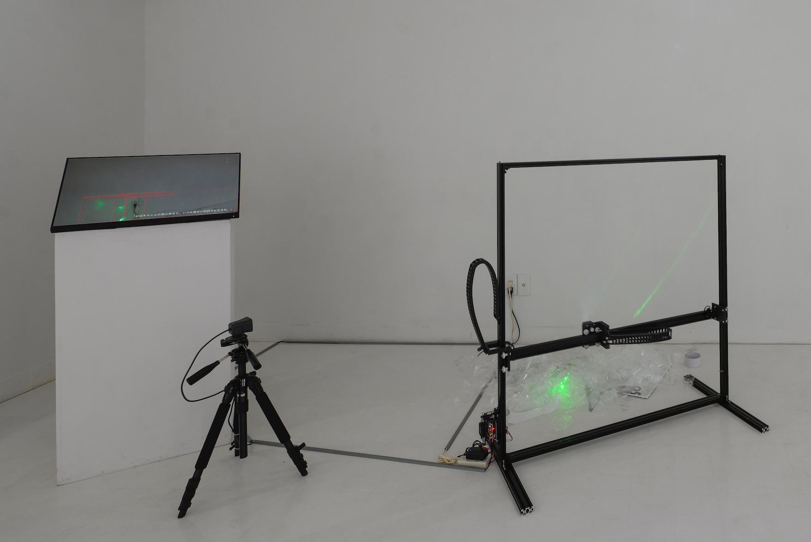
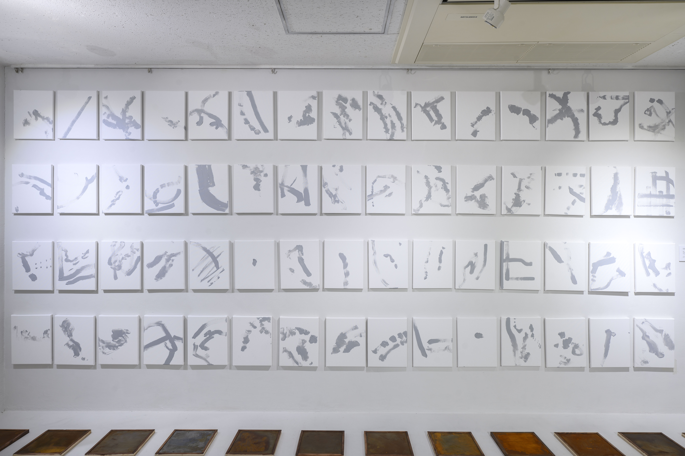

地味展 トークイベント

 fig.1 告知ポスター
登壇者： Scott Allen, johnsmith, Takehide Yoshida（日辻 欠席）
・なぜ、地味というテーマなのか
Scott： 今回の「地味」というテーマは日辻くんが4年くらい前から温めていたテーマで、メディアアートにありがちな、陽の、派手さみたいなものによって隠れちゃう（見えにくくなってしまう）ものってあるよね、ということです。この言葉から僕たちのやってきた事を考え直した時にいくつか出た候補の中で、非常に僕とSmithも腑に落ちるし、やってきた活動の共通する 部分も多いというところがあって、この言葉いいんじゃないかという形になりました。でもどう地味かというのに関しては結構それぞれに捉え方が違っていて、なので日辻くんが電気について考える、ということに対して、僕は考えてなかったりするんですね。普通にコンセント刺さってレーザーついてますし…みたいな。地味、という言葉に対して、いろいろな切り方、僕らは串の刺し方という言い方をしてますけど、この三人の中にある制作や、作家としての考え形に対して、この一本の串でさせる項目が、一番多いのではないか、ということに落ち着きました。  fig.2 展示風景
・今回の展示について
 fig.3 左から吉田、scott, johnsmith
吉田： 今回の展示はアーティストの活動の中で生まれる悩みとか今まで見てきた作品に対して「これでいいのか？」みたいなそういう疑問から生じる作品を集めた、その作家による展示なので、キュレーターが入って今ある我々のリアリティとか社会の問題とかについてその作家の目線からそれをランディングさせるというか。今こういう状況なんだと思うんだけど、みたいなそういうステートメントを出す展示とは違うんですね。 作家が悩みながら作る展示なので、すごく作家ドリブンの展示ですよね。展示のステートメントについて見ていくと、すごさってそのまま自明なものとしていいのだろうか、という悩みから発しているというのは面白いかなと思いました。
Scott: すごさというのはなんか結構メディアアートで色々作ってると「油断してるとすごくなる」という問題が結構あるよね。その中でそれをどう封じていくかというところ結構話したりしてましたね。
吉田： コンセプトのに書いてある「すごさ」というのは実際どういうものを対象にして考えてましたか？
Scott: そうですね。情報量の多さとか演算の多さみたいなのがまずあると思いますね。とにかく、量で見せる、というようなやり方。例えばモーターを大量に制御するとか、ディスプレイとかプロジェクション自体がそもそもpixelが大量に表示されているものだったりするので、大量に何かを複製して使うとその緩急で別の何かを表現できるよさ、というのはあると思います。その行列のすごさ、インパクトによって見落とされてしまうものはあるのではないかと。
吉田： そうですよね。マッシブなものを置けばそれだけで崇高になって、それだけで展示は成り立つ、というのは確かにあります。桜みたいなんですよ。桜の花、それだけという。 (池上高志, et.al マッシブデータフローの生命性)
johnsmith: 僕らは花を見る、というためだけに花見にあれだけの人数集まるわけですからね。
吉田： なんか、お花見気分の展覧会みたいなものに対する悩みから始まったというのはあるんですかね。
Scott: そうですね、かなりあったと思います。
johnsmith: 僕はやっぱり例えば15号キャンパスで書いても面白くないんだけど200号にしたらめちゃくちゃ面白くなるものみたいのがあって、それが僕はすごさなんじゃないかって思ってるところがありますね。ただ、すごいものは良いんですよ。実際問題として200号で書かないと表現できないものというのは存在するので、それの良さというのは独立にある。それはそれとしてあるにせよ、我々がアプローチすべきものはそこではなかろうという。僕らが扱う必要があるのか、という疑問、意識として「すごさ」ってことを使ってる。
Scott： 巨大なホールで超でかいスピーカーで全身に音を浴びたらもうどうしようもなく感動してしまうとかそういう 訴えかける力みたいなのも、「すごさ」が持っている性質なのかなというところがありますよね。
吉田： 池田亮治のデカい音、骨から震えるような音とか、きっとそれだけでRyoji Ikedaが神様のように見えてきてしまうような…。
johnsmith: 現象としての面白さ、みたいなものは絶対的にあって、また別の側面から言うと僕は先日京都で展示していて、池上さんに似たような話をして、それの感想をもらったんですよね。「でもすごさって お客さんに対する最低限の礼儀だよね」という。「それはそうだよね」というのは、まああるんですよね。だからまあ、すげーしょうもないものを金払って移動してきてもらって見てもらうというのはまあまあ罪なわけじゃないですか。
吉田： 一つの言い方として、「私は芸をする人なので，来てもらったからにはなにか持って帰ってもらわなきゃいけない」というのがありますよね。確かにアーティストとしての責任を「すごさ」でカバーするみたいなところあると思うんですけど。 最初にこのステートメントを見た時に思ったのは、ここで書かれている凄さって、本当にいろんなものを含んでいて、芸術表現として排すべきものなのか、つまりここで言う「すごさ」というのが、どうしようもなく現代の状況から出てきてしまうもので、それこそ、新しいアートの一つの形態なんじゃないか、みたいなことも考えていて。ティモシーモートンとか、ジェームズ・ブライドルという哲学者というか、アーティストっぽい哲学者みたいな人たちがいるんですけど、あの人が書いているのは、ハイパーオブジェクト という事を言っていて、それがどういうことかというと、「too Big too See」と呼ばれている、つまり大きすぎて見えないもの。例えば気候変動とか、資本主義とか、それこそ発泡スチロールがどうやってマイクロプラスチックになるか、とかそういうプロセスって我々には絶対認知できないんですよ。その現象を全部追っかける訳にもいかないし。ほかにもスーパーでバナナを買ったときに、そのバナナがどうやって作られて、どういう経緯でここに今あるのか、みたいな、そういうことですら厳密にはわからないほど世の中は複雑になっていて。そういうハイパーなものが存在していて、世の中がどんどんハイパーになっているのならば、この時代における芸術にもハイパーなものが含まれるのはすごく当然で、逆に言ってしまえば、ハイパーなものを出さないと理解できないものを語るために、必然的に「すごさ」を扱っている側面があると思う。 それを、「すごい」からズルじゃね？みたいに言って済ませていいのか、というのはちょっと疑問に思いました。
johnsmith: ただやっぱりハイパーなものを我々がそのまま受け取れるかって言ったらそれは無理な部分があって、 だからこう極論言っちゃえば僕は見るという行為、フォローする主体の側に わからないことを留保できる能力がさえあれば、対象は複雑でも何でもいいと思うんですよ。わからないという状態で自分の中でキープできるという能力って何かを見るときに一番重要な能力だと思っていて。 「これはこういうことなんですね」って言いたがるわけじゃないですか、我々は。 僕は今回とにかく説明できる作品みたいになってるんでそれを言うのもどうかなという気もするんですけど 例えば岡本太郎の絵画見た時にこれは日本の縄文時代の造形物の影響があってで彼はパリで勉強していて、で、かつあの時代のパリの芸術の潮流の影響がすごく強くて、なのでああいう陽光の強い地中海美術的な色彩があって…みたいな話ってのはいくらでもできると思うんですけど。(岡本太郎 「今日の芸術」) そうなった時点でそれは記号になっちゃうんですよね。 やっぱりハイパーなものを記号に落とすってことってのはすごく相性が悪い気がしています。
吉田： その通りですね。 最近陰謀論が非常に活発化しているのとかもおそらくそういう理由で、現代社会において個人という限定的な観点からハイパーのものを理解できないので、一つのストーリーとか、自分が全知全能なものとしてその政治家がどう考えているか、とかは全然わかんないけどおそらくこうだろうというような。なんとなくそういうもので陰謀論的なストーリを組み立ててしまう。johnさんがおっしゃっていたようななんだかわからない状態のものを残しつつ認めるみたいな姿勢に対して、アートは非常に有効性があるというか、つまりクリティカルにそういうハイパーな情報を伝達できる手段なんじゃないかと思うんですよね。だからハイパーなものが置かれてて、それをロゴスを超えた感性的なレイヤーで、なんとなくハイパーってこういう感じかな、というような匂いを感じる。なんかそういう理解ができるのならば、その凄さが芸術表現に入っていても、それはそれで何かアートの新しい形態なんじゃないかなって気はします。でもそれはそうとして実際に芸術をやるアーティストたちが、なんかそれを武器として使っていいのかみたいなものを1回考え直すのは必要で。そこにおいて芸術運動的な、我々の芸術活動を見返す展示としてグループ展というのは非常に重要なものなのかなと思います。
johnsmith: Scottくんはどう思います？
Scott: 僕ですか。 そうですね。その通りだなと思って普通に聞いてたんですけどちょっと凄さの例をもう1個、一応出しておくと、結構単位時間あたりの情報量って効いてくるかなと思って。つまり時間的な話ですね。長い時間かけて100の情報を出すというのと、せーのでぽんって100出すという方、すごさというのはおそらくそ後者の方にいるというような ニュアンスだと思いますね。だからある作品も例えばその日見て、で何日かずっと考え続けてたらちょっとずつ分かっていくみたいな。それこそ、さっきjohnsmithが言ったわからない状態だったのをキープして、で数日あるいは何ヶ月とか、他の展示に行ったりとか他の影響を受けて、なんかやっとこう真髄を掴んでくるみたいな、芯をつかむみたいなところが、目指したいところに近いんじゃないかなという感覚はすごく持ったりしてますよね。
吉田： ここで思いついたんですが、ブルーノ・ラトゥール というフランスの哲学者でキュレーターもやってた方がいて、 その人は展示の形式としてドリルとかレッスンという試みをやっているんですね。普通の人の立場からしたら、本来わけのわからない非常に巨大な、政治状態とか環境問題とかいろいろなことに対して理解するプロセスとして鑑賞者が一種のドリルみたいなものを配られるんですよ。で、ブースごとに巡っていってそのブースになんかヒントというかここで考えてほしいとかキュレーターが意図としていたことみたいのが全部書いてあって、それを見ながらドリルとして1個1個分かっていく、その旅を展示の中でするということをやっていて。単位時間あたりの情報量を ちゃんと区切ってあげてドリルにして渡してあげる。例えばそういうやり方も効果的なんだなって思います。
・メディアアートを勉強するということ
johnsmith: 教育的な何か、勉強。でもそれって勉強になっちゃうんですよね。でも人間やっぱりもっと勉強ってものが好きだと思う。僕もscottくんも13年くらい学生やってますけど
吉田： 勉強は全てを解決する…
johnsmith: 僕の所属している研究室で哲学をやってる、いや哲学をやってる、というと彼は怒るんですけど廣田くん という人がいて、彼がよく言うのは、「勉強はどっかでやめなきゃいけない」という話なんですね。時間をかければかけるほど、自分の可能性が広がる、できることが増える勉強という行為、つまり何かをすれば、何かができるよう になるんだって無限の可能性に開かれてる行為な訳ですね、勉強って。なので勉強というのは無限の魅力がある訳で、でもどこかでその無限の可能性を諦めなきゃいけない、つまり、どっかで諦めて、えいやで自分の成果、みたいなものを出さなきゃいけない。「勉強のできる奴の意見だな」とも思いますけど。 つまり勉強というのはやればやるほど自分のできることが増える、という、一種の快楽があって。そういう麻薬性、依存性からどこで逃れるか、みたいな話なんですね。 地味というテーマで考えていこうと思ったらいくらでも勉強できるし、いくらでも考えていけるんだけど、ここでえいやで出すための、締め切りを作る。そうしないとやっぱり形にならない
吉田： 実際この展示をしてみてどう思いますか これで良かったのかとかなんかまだ始まって3日ぐらいですけど。来てくれた方々のフィードバックを受けて作品について、考えることはできると思うんですけど展示で出してみて実際これは正しかったのか、とか効果的な部分があったのか、あるいは自分たちの方向性を試すための実験みたいなものだったのかとか。そういうものがあったら。
johnsmith: 僕に関しては今回の展示はリハビリテーションだった思いますね。僕は、それこそ１ヶ月前に京都でアートフェアに作品出したんですけど、それの前って、6年くらい作品出してなくて。舞台仕事とか展示のシステムとかアート界隈ではやってましたけど、なんで作品を作ってなかったかというと最後に作品を出したくらいの時期に、音楽系の学会とかに出たりして、そこで偉い先生が研究の発表とかをするのを聞いて。で、例えばこの論文でここで使ってる音はどういう選び方をしてるんですか？みたいな質問をしたときに、「そこは私が気持ちいいと思った音を選んでます」って答えが返ってきて、なんかこう学会まで開いてアカデミックにやろう、とやってる人たちが、芸術というものの語れなさ、みたいなのを良しとする姿勢に嫌になっちゃって。で、ちゃんと全部語れる科学の世界に行こうと思って東大の(池上研究室)[https://www.sacral.c.u-tokyo.ac.jp/]に入って、みたいな流れがあったりするんですね。 僕は修士は三輪眞弘 の学生でもあったので方法主義 をやろうとしてて。作品から人間の感性とか作為みたいなものを全部排除しようって考えてて……。でもまあそんなこと不可能なわけですよ。何かを選ぶって行為自体にそもそも作為性があるので。そういうのに悩んでる中で、科学の方法論で、ちっちゃいとこからわかっていこう、ていうプロセス。ちゃんと語れるとこから理解していこうという、それこそ、数式とテキストで扱えるもの以外扱わないという誠実さを、自分の問題意識に対して適応してみようという割り切りでやっと6年の間を開けての作品作りだった、という。そこで6年ぶりに何か作ろう、となったときにやっぱり6年も間が開くと恥ずかしいんですよね、何かを出す、ということが、で、もう根底意識として派手なのはいかんでしょ、という意識はありましたね。恥ずかしいので。
・今回のテーマと作品について
johnsmith 今回、地味というテーマで良かったなという気持ちはあるんですけど、確かに作品でそのテーマを広げられたかというと、やっぱり日辻さんの地味という主張が、今回の展示コンセプト文、これに書いてありますけど、文体は柔和なんですけど、結構強いのでこれに完璧に合わせる、これを体現したものを作るというのは意外と難しいなって思ってました。例えば本当に日辻さんの作品はこのコンセプトをすごいガッチリ体現してる作品になっていて…。テーマ自体は協議しながら決めて行ったんですけど、最終的にやっぱり、一人が温めてたアイディアを全体のコンセプトに使おうって流れになったのでそこで取りこぼされてしまったものってのはあるな、というのはあります。
Scott： まあ、そういう部分もありつつ、でも日辻君の地味という言葉には僕もSmithも共通項が多いので、それですごく納得できそうだし、一度テーマとして地味って言葉を置き直して、じゃあどういうものを作れるか、みたいなところで手を動かして行った、みたいな過程がすごいよかったな、と思っています。あんまり普段考えないところにもアプローチできたかな、と言うところと、あと普段、自分は2019年ぐらいから 慶応SFCの徳井先生 のところで社会人博士やってたんですけど、そこで機械と創造性みたいなことがラボのテーマとしてあって、AIとか計算を用いたそういった知の外部化することによって、ある種人間について考える、みたいなことをやってたんですけど。それの延長として地味を考えるってなった時に、自分のテーマであった見立てとか想像力みたいなものに今回 合致するようなアプローチができたという意味では、地味という言葉が持つ性質がうまくワークしてたんじゃない かなというのは僕は個人的に思いました。あと、その地味という言葉が、何も前段階の了解がない状態で展覧会に入った時に作品1個1個が本当に地味かって言われた 時に人の解釈が結構変わるなって実感があって、つまり地味というのは派手の対義語だったりすると思うんですけど、おしゃれなものと地味なものみたいな、服で言った時にね。そういうふう考え方した気に、いやこれ羽ついてておしゃれやんみたいなことがあったりとか。僕の作品で言うと めちゃくちゃレーザー光ってて派手やんみたいな。そういうその地味の持つ言葉の空間がいろんなベクトルがあるから切り取り方によっては地味じゃない、みたいなことが発生していて。それはネガティブな捉え方すぎるかとも思いつつ地味という言葉の良さなんだろうなと思いましたね。
johnsmith: ラテン語で新しい言葉を定義するべきだったな、という気持ちがしてきたんですけど、それこそね「明るい部屋」 のロランバルトみたいに、あの人はとにかく自分がアプローチしたい概念を表す概念としてなんでもラテン語で新しい言葉を作っちゃう。結局日常的に使ってる、ある言葉に新しい意味を付与する、というのは基本的に悪徳なので
Scott: 言葉の発明はありですね。
johnsmith: 元々定まっている言語の定義を広げるんじゃない、という。何かを語るために使うのが言語なのであって、なので発散する意味を押し込めるのが言葉の仕事なので。
吉田： 言語化したら変わっちゃう。
johnsmith: そうですよね、だから新しい言葉を作らなきゃいけないんですよ。元の言葉に引っ張られちゃうので そういう意味では地味をテーマとして使う、というよりも、何かにタイトルをつけてって行為が全部そうなんだと思うんですけど。自分の作品にタイトルをつけるというのはやっぱり難しいですよね。そんな一言で語り切れる訳ないし。全部無題にしたらいいかなとも思うんですけど、それはそれでナンバリングがめんどくさいので…。やっぱり大喜利みたいになっちゃうな、みたいなのはありますよね。テキスト、記号を見て、それを踏まえて作品という抽象的なものを見る、というプロセスが噛んでくるので、それに対して言葉とどう結びつけるか、という大喜利になっちゃうって感覚があって。だから全部無題がいいよね、という。言葉で語れないものにアプローチしてるのに言葉で語るんじゃないよ、という。
吉田： 最初、やっぱり僕は皆さんの作品を見た時に、これは地味なのか？というのはやっぱり僕は思って。 「すごい」の対比としての「地味」というよりも、「すごい」によって我々が錯乱してしまう状態に対して嫌悪感を持って作られた展示なのだとすると、これは錯乱に対してのアンチなので、アンチイリュージョンみたいな言葉というか。実際に70年代似合った有名な展示で、ホイットニー美術館で「アンチイリュージョン」展 というのがあったんですけど、プロセスアートやコンセプトアートについての展示です。絵を描くじゃないですか、うまい具合に遠近法とかを使いながら三次元に見せてある種のイリュージョンを生み出すんですけど、そこでいうイリュージョンとは違って、実際に描くプロセスとかそういうものにこそリアルがある、ということを見せる展示だったんです。今回の展示も錯乱させないで、実際にそこにあるものに対して、ボトムアップに想像力を働かせて、こちら側（鑑賞者側）から感じている。そういう点では、イリュージョンに対するアンチイリュージョンがあると。こういうイリュージョンに対してお二人がどういうことを考えているのか、聞きたいです。
johnsmith: 僕の考えるイリュージョンというのは、つまりストーリーテリングで、僕は徹底してストーリーテリングにはアンチでありたい、と思っているけど。結局は言葉でどのように語るか、という話になってしまう訳で。(池上高志 「動きが生命を作る」) あらゆる言葉には元の意味があるので、元々の意味がある言語を何かのタイトルとか、説明に使う、ということはそもそも問題である、という意識が、今の話聞いて沸々と浮かび上がってきたんですけど。だからやっぱりラテン語でタイトルをつけるしかない。
吉田： そうすると誰もわかんないじゃないですか（笑）
johnsmith: それこそがわからない状態にどう向き合うか、なんだと思うんですよね。 だからとりあえず適当にラテン語でタイトルをつけて、それで展覧会を見た時に、じゃあ「俺がここで感じたものはこの言葉なんだ」ということで、新しい言語領域というか、そのわからなさをわからん単語に紐つける、みたいな行為に結構意味があるんじゃないかと。存在しない言葉を作ってあげて、この展示で見せてるのはそれなんだよ、という。強制的に紐つけられていく。だから、人間が使える言語の領域がどんどん広がっていく。 それがまあ一種、彫刻であったり、文筆であったり、あらゆる文化的な活動というのは、いつか語られるところに落とし込まれなければいけない訳で。そのプロセスを再現しているだけなんだけども。アートをどう語るかという意味でその方法はちょっと面白いんじゃないかって今話しながら思ってますね。
吉田： 概念工学という本 を最近買って、概念を工学するんですよ、エンジニアリング。
johnsmith: 概念自体を発明していこう、というか。メソッド的に概念ってものが扱えるんだぜ、ということなんでしょうけど、言葉だけ聞くとね…読んでないので。
吉田： スコットさんの作品もジョンさんの作品も想像させるとか、見立てというところにある種の地味さを見出しているところは面白いな、と思っていて、一方日辻さんの作品はそのプロセスとか、作られるものに対するシンプルさとか、根源的なミニマルさみたいなところ追い求めてる感じなところが違くていろんな地味さがあるなと。
johnsmith: 日辻さんの作品の不思議だなって思うところは、これを突き詰めていくと構造的な美醜の話にしかならなくなっちゃうのではないかという気がしていて、それは結局また逆説的に、これをより良くするためにどうしたらいいか、となったら派手にしていくしかない、みたいになっちゃうんじゃないかなみたいな不安があって。  fig. 4 日辻 「琥珀は塵芥を取らず」2023
そのアンバランスさというか、やっぱりまだ整理してるプロセスの途中なんだ、って感じ。おそらくこの三人の中で、一番アーティスティックというか、自分に向き合って物を作ってるのは日辻さんですね。僕は机上の空論の話しかしてないので。文化というモノをこう扱いたいんじゃい、みたいな話しかしてなくて、僕自信の話は一切したくない、という。日辻さんはやっぱり、自分が作る、ということにかなり向き合っていて、結果的に一番オールドスクールな作家性を実は発揮しちゃってる。オールドスクールはあんまり良くないやろ、みたいなことを言いつつ、それは発揮されてるというのはかなり面白い気がしていて。
・作るというプロセスの中で
 fig. 5 Scott Allen 「photo"n"s of pareidolia」2023
Scott: 作ってる中での話とかね、そういうことを話していると、冒頭にもいったんですけど、ほっとくとすごくなっていっちゃうんですよね、作るときに。僕は具体的にはレーザーを昔から扱ってたんですけど。どのような道具を使って、どう反射させて、像を作っていくか、という過程で、最初スピーカーに液面、液体をこう上において、液体を揺らしてそれにレーザーを当てて、反射光を出したり、とか。いろんなモジュールみたいな物を自作したやつを地面にポコポコ置いていくんですけど、それを並べてみた時に、なんかすごいものいっぱいあるな、と思ってしまって。なので今回は本当にスタティックなOPPテープ、透明なテープをビーって引き剥がしてベタベタ貼ったりとか。鏡を置いたりとか、本当にその程度に抑える、みたいなことをすごく意識的にやる機会になったので。メディアアートの領域にいる人にとっては、このアプローチは結構我慢のアプローチなんだな、と思ったと同時に、それによって開眼した部分もある、というのがあって。つまり、ミクロな現象の方に行くことによって解像度が高まる、というのがあってその辺すごく、いい実感があったなと思ってます。Smithとかもこれ、作るときに、これすごいやん。みたいに思うこととかありました？
 fig. 6 johnsmith 「drawing 機械の手、人間の手」2023
johnsmith: いやあんまりしてなくて。単純に作ってて、あ、なんかすごくなってきてる、まあいいか！みたいな感じで。60枚あったらすごくなっちゃうな…みたいな。これは僕らが勉強会で「グリッティング」って呼んでるグリッド状にたくさん並べたら面白くなっちゃうよね、というので批判してるやつで。100個の行列があったらそれだけで情報量に打ちのめされちゃう、みたいな。それやってるなー。でももう後戻りできないなーみたいな感じで。実は僕はあんまり地味であることに拘ってなくて。そもそもコンセプトにしか意味がないだろ、みたいな意識があって。見栄えの問題というのはそんなに重要ではない、というのはしょっちゅう言ってます。コンセプトが地味であれば地味でいいだろという意識でやってますね。
Scott: グリッティングは日辻くんが生み出した言葉ですね。広告仕事とかでそういうことをやりがち、というのがあって。グリッティングって、何かを作るときに少なくとも触れちゃうんだけど、どういう風に使うかが重要で、ただ数で押す、数あることで一つの表現を成立させる、それ自体に凄さみたいなものを求めてない姿勢で扱うグリッティングというのもあって、「すごさ」についてどう考えるか、という点で、いいきっかけになる言葉だと思います。